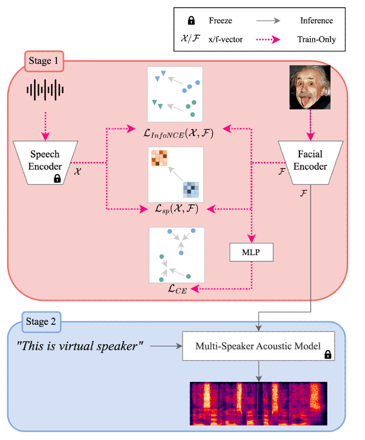
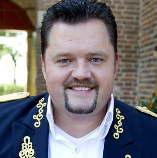
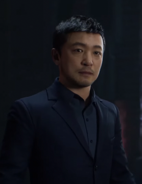

Synthe-Sees: Face based Text-to-Speech for Virtual Speaker
Jae-Hyun Park, Joon-Gyu Maeng, Tae-Jun Bak, Young-Sun Joo
Abstract
Recent virtual voice generation researches have limitations in that they results in low-quality voice and generate inconsistent voice from the same speaker's different facial images.
To handle this, we propose a facial encoder module for the pre-trained multi-speaker TTS system called SYNTHE-SEES, which utilizes face embeddings as speaker embeddings by sharing the
embedding space of the pre-trained speech embeddings using cross-modal contrastive learning. We trained the facial encoder in two ways: 1) for consistent embeddings, we use the dataset
supervision to capture discriminative speaker attributes; 2) we leverage internal structure of the speech embedding to generate diverse and high-quality voices. Experimental results
demonstrate that our method generates more distinct, consistent, and high-quality speaker embeddings than other state-of-the-art methods in both quantitative and qualitative evaluations.
Especially, the result of cluster-level evaluation verifies that our method shows the highest distinction performance of diverse speaker embedding.

Exmaples
We recommend to execute it in Google chrome. Loading photos takes a few minutes, please wait.
Results from unseen faces
Various results including real, virtual, and not human character from proposed method. We sample transcriptions from CNN, LJSpeech.
Celebrity (Real human)
Text: At the same time, extreme weather has had a deadly impact in other parts of the region.

Text: The event was supposed to feature outdoor activities, cultural performances, sustainability workshops and other offerings for the participants, mostly middle and high schoolers.
Text: These people had many characteristics in common and were all called Indians.
Animated (Virtual)
Text: It ended just where it had started, on a dead twig of a tree in a shady, rather lonely part of the Green Forest.

Text: You are so accustomed to light, I fear you will stumble when I try to guide you through the land of darkness and silence.
Text: A preliminary investigation report is expected to be released about 15 days after the team completes their work.
Text: His cunning began here; he smiled habitually, by way of precaution, and was almost polite to everybody, even to the beggar to whom he refused half a farthing.
Faces from identical speaker (also unseen)
Given 3 samples of identical speaker, we show the results compared other face-to-voice approaches. In many of cases, we find out that other methods generate
different voices from same speaker while our method generate consistent voices. Note that we generate voices from same text in same speaker since it is easy
to find voice difference. It is recommended to listen to the samples one row at a time.